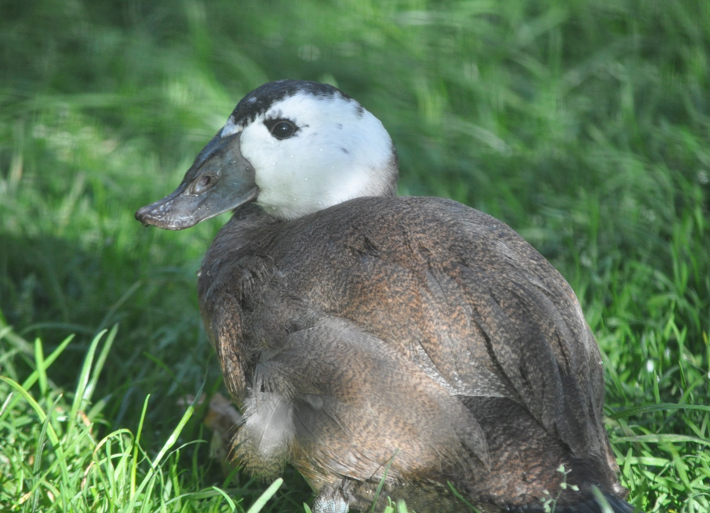

Galeria de imagenes



Murcian rare animals
La malvasía cabeciblanca es un pato compacto, que mide entre 43 y 48 cm de largo y pesa entre 580 y 750 g, que tiene el cuello corto y la cola larga y rígida.
Sus patas están situadas en una posición muy trasera, lo que les facilita el buceo y la natación pero les hace torpes en tierra. Se caracterizan principalmente
por la forma de su pico, que tiene una base muy abultada y redondeada. Presenta un marcado dimorfismo sexual. Los machos son más grandes y corpulentos.
Los machos adultos en época de reproducción tienen el pico de color azul celeste intenso, la cabeza principalmente blanca, con una lista negra en el píleo.
También tienen negros el cuello y la cola, mientras que el plumaje de su cuerpo es de color castaño rojizo.
Fuera de la época de reproducción su cuerpo se torna
más grisáceo, la cola y el cuello se aclaran, mientras que se extienden las zonas negruzcas de la cabeza de forma variable entre el blanco, sobre todo en la nuca,
y su pico se vuelve negruzco. Las hembras adultas tienen el cuerpo castaño, y su cabeza listada en pardo negruzco y blanquecino, con la parte superior negruzca y
las mejillas blanquecinas cruzadas por una lista negruzca, en invierno también se vuelve más grisáceas.
La malvasía cabeciblanca tienen un aspecto similar a la malvasía canela, de la que se diferencia principalmente por la forma de su pico. Las malvasías canelas
tienen el pico en forma de cuña y carecen del gran abultamiento de la base característico de la malvasía cabeciblanca. El blanco se limita a las mejillas en los
machos de malvasía canela, mientras que las malvasías cabeciblancas carecen de blanco en las región infracaudal. La lista que cruza la mejilla de las hembras de
malvasía cabeciblanca es más oscura y ancha.
La población originaria de la malvasía cabeciblanca se extendía desde Asia central por todo el Mediterráneo hasta la península ibérica, incluyendo el norte de África. Su área de distribución se ha fragmentado y mermado notablemente, especialmente en la zona occidental. Este pato está considerado en peligro de extinción por la reducción de sus poblaciones en los últimos años. Este declive es debido a la pérdida del hábitat, el deterioro de los humedales, la caza furtiva y al cruzamiento de la población española con la introducida malvasía canela (Oxyura jamaicensis), cuya expansión supone una reciente amenaza. Esto ha llevado a combatir las poblaciones de la especie americana en Europa occidental con campañas de erradicación.